3.2 GitPod
Notes:
- sections from
getting-started-with-gitpod.md,tips-and-tricks.md, andhard-reload.md - can use RPS HTML as example
- should include forking, workspace layout, bin/server, tab management
- could be chance to talk about file structures and terminal
- sections from
3.2.1 Getting Started With Gitpod
One of the most painful parts of learning how to program, in the old days, was simply setting up your computer to be able to write and run code. At a minimum, we needed to install:
An application to write your code with. Something like Microsoft Word is not be ideal for writing code, since code needs to be plain text (just a series of characters in a file, nothing else) for the computer to understand it. Word is designed to write rich text (for humans) with fonts, colors, sizes, margins, layouts, etc.
Computers come bundled with some plain text editors (Notepad, TextEdit, etc) but they are very basic. We would instead prefer to use powerful tools specifically designed for writing code with like Microsoft’s VSCode or JetBrains’ RubyMine.
Ruby itself. Writing code is not useful on its own if we don’t have something to run it with; just like we need a browser installed to interpret
.htmlfiles we need Excel installed to interpret.xlsfiles, and we need Photoshop installed to interpret.psfiles, we need Ruby installed in order to interpret the.rbfiles that we write.Not only that, we need the correct version installed. If your computer happened to come with an older version, upgrading to a newer version could be complicated — especially if some other application you use depends on the older version.
There are so many different combinations of hardware, operating systems, previously installed software, permission levels (for example if you are using a work-owned computer), that just getting these things installed would often stop you before you started writing your first program. We can’t allow that!
Instead, we’re going to use a write our code using a cloud computer. “Cloud” just means that it’s a computer that’s sitting in someone’s warehouse1 somewhere, and we rent it from them. It already has all of the software that we need installed on it, and we access it through our browsers. No muss, no fuss!
Gitpod.io is a great new service that provides instantaneous, full-fledged cloud development environments from any codebase that is on GitHub.com — which is great, because we (and 98% of other teams) use GitHub to store all of our projects, homeworks, etc. The text editor they provide is based on Microsoft’s VSCode — my editor of choice. It will have the exact right version of Ruby, Rails, and everything else we need. And they have a very generous free tier. Great!
Sign up for a Gitpod.io account. It will ask you to sign in using your GitHub account.
We will create a workspace for each project that we work on. Each workspace is based on a GitHub repository (i.e., a folder with some code in it).
For example, here is a repository:
To create a Gitpod workspace based on a repo, in the address bar of your browser enter
https://gitpod.io/#and then the URL of the repo. For example,https://gitpod.io/#https://github.com/appdev-projects/helloruby
To make that process easier, Gitpod has a browser extension that you can install if you want to.
Typically, we will assign you a project in Canvas. The assignment will include a button that says “Load assignment in a new window”. When you click on that button, it will create a fork (i.e. a copy) of the repository (i.e. the folder of code) on your own GitHub account.
You will then create a Gitpod workspace2 based on your fork, so that you can save the work that you do back to your own GitHub account. A button to create your Gitpod workspace will appear within the assignment, so usually all you need to do is click on it after clicking “Load assignment in a new window”. And then you can get right to work, with the exact right version of all of the project’s dependencies ready to go!
3.2.2 Forcing Chrome to “Hard” Refresh
Sometimes, when we update a CSS stylesheet, our page appears not to change. This is especially frequent when we’re working on static HTML files in the public/ folder.
The cause is usually Chrome’s aggressive “caching”, i.e. re-using static assets that it has already downloaded (for performance reasons). If we refresh an HTML page that we’ve updated, Chrome won’t necessarily also refresh all <link>ed CSS files — unless we ask it to by “hard” refreshing.
To do so:
- Open the Dev Tools…
- from the
View > Developermenu - or right-click on any element and
Inspect - or press F12
- or Ctrl
+Shift+J (on Windows) or Option+Command+J (on Mac)
- from the
- Right-click on the refresh button.
- Select “Empty cache and hard reload”.
Open Dev Tools:
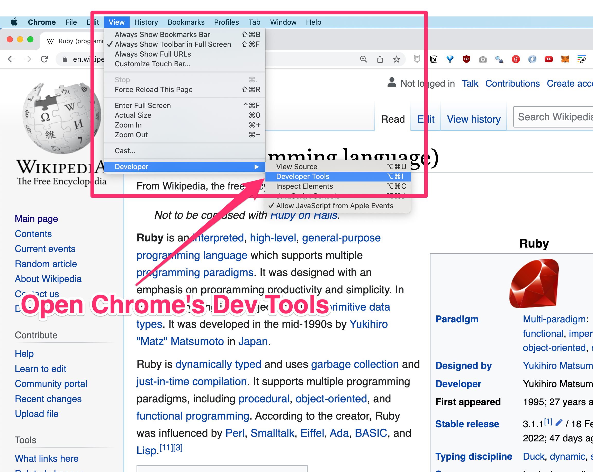
With Dev Tools open, “hard” refresh:
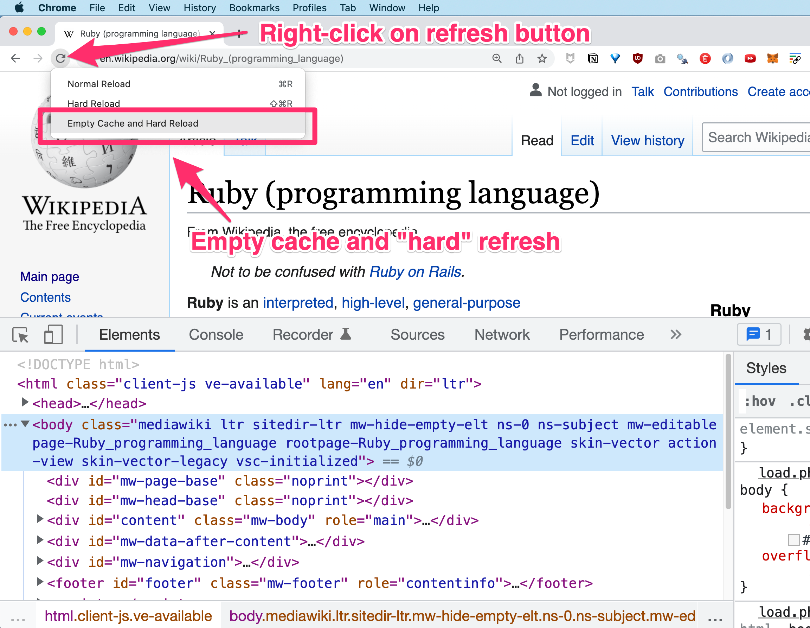
Your HTML document should now have the latest CSS and any other linked assets (like images or javascripts).
3.2.3 Gitpod keyboard shortcuts and other productivity tips
3.2.3.1 Important Terminal keystrokes to know
3.2.3.1.1 Jump to beginning of line
You can’t use your mouse at the command line, so it’s important to know how to move around quickly so you’re not restricted to just using your arrows. Jump back to the beginning of the line with Ctrl + A:
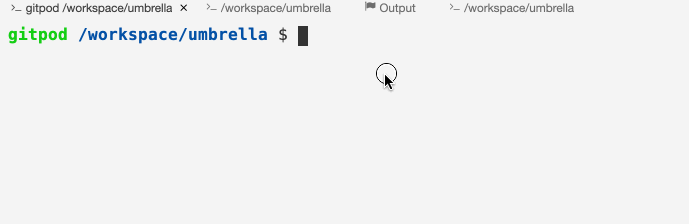
3.2.3.1.3 Up and down arrows to scroll through your history
Use your up and down arrows to scroll through your command history so that you don’t have to re-type your commands over and over.
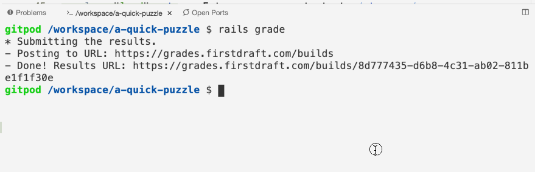
3.2.3.1.4 Clear Terminal
Mac OS: Command + K
Windows: Disabled by default3
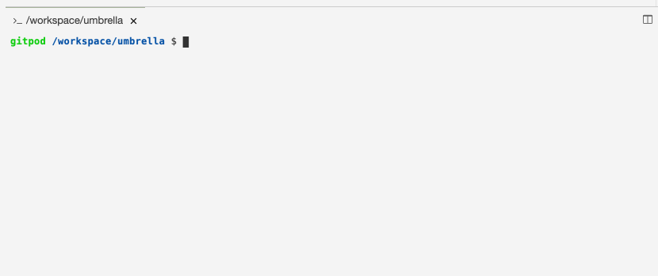
From the menu open Preferences and select Keyboard shortcuts.
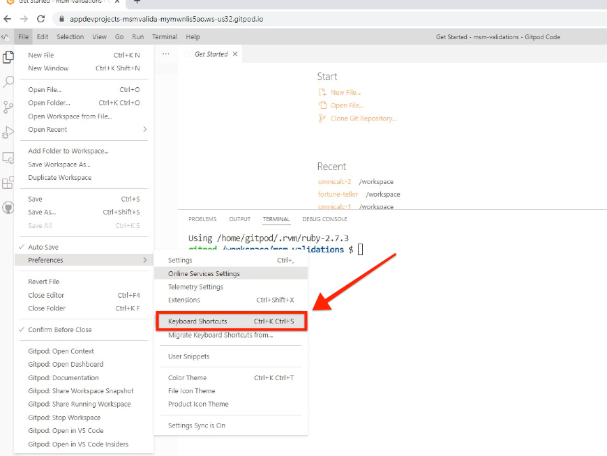
Then search for “terminal clear” in the search bar and click the plus icon to the left of it.
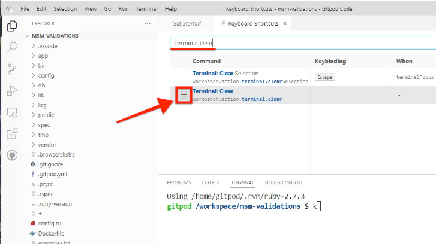
Finally, type ctrl + k and Enter to confirm.
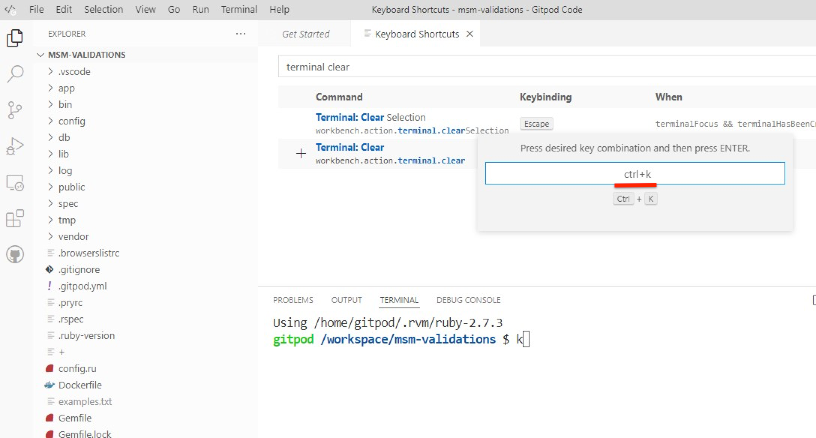
3.2.3.2 Editor keyboard shortcuts
3.2.3.2.1 Command Palette
The most important thing to memorize is how to open the Command Palette, which will allow you to fuzzy search within for all other commands. If the command has a keyboard shortcut mapped to it, the shortcut will be displayed to the right. This is the best way to learn the keyboard shortcuts for the commands that you use most frequently.
Mac OS: Command + Shift + P
Windows: Ctrl + Shift + P
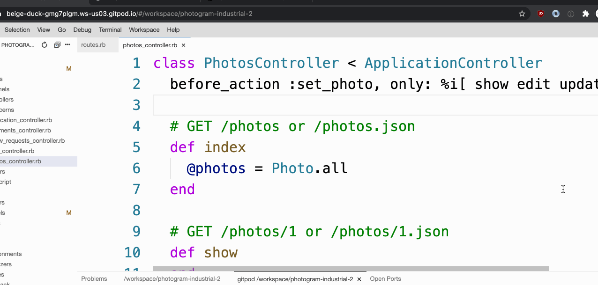
3.2.3.2.2 Quick open file
To quickly jump to a file:
Mac OS: Command + P
Windows: Ctrl + P
And then fuzzily search for its name. For example, you could type “phco” to get to photos_controller.rb and the list would quickly narrow to bring that file to the top of the list.
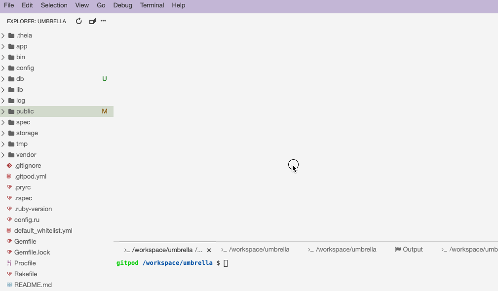
3.2.3.2.3 Toggle Code Comment
To quickly comment a line of code, put your cursor on that line and then:
Mac OS: Command + /
Windows: Ctrl + /
You can also highlight multiple lines of code and comment/uncomment all of them at once.
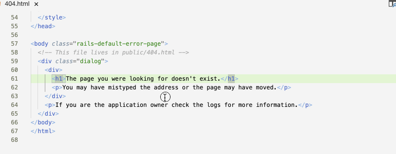
3.2.3.2.5 Find Next Selection
Mac OS: Command + D
Windows: Ctrl + D
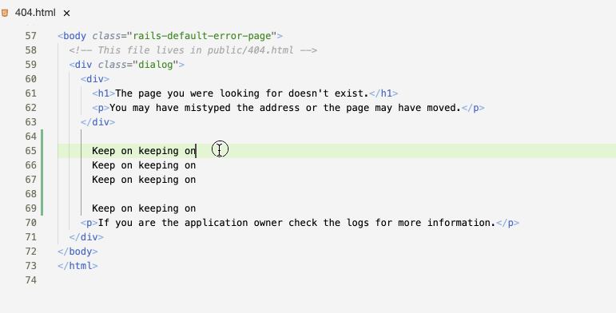
If you go too far by mistake, you can step backwards with Command + U or Ctrl + U.
A warehouse full of computers that people rent and connect to via the internet is called a “data center”. Some data centers have their own power plants, and some are even earthquake-proofed.↩︎
Gitpod will delete an inactive workspace after 14 days. If you want to save the changes you’ve made for longer, you can “pin” a workspace in Gitpod which will prevent it from being deleted. Even better, you can push your changes to Github.↩︎
A recent Gitpod update removed this keyboard shortcut for Windows, so you’ll need to configure it yourself.↩︎